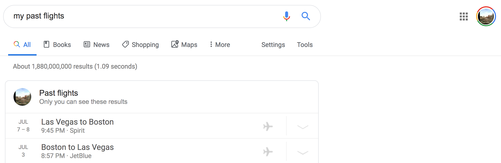

If you are a Gmail user, then when you search for "my past flights" on Google you will see a list of your recent flights.
The link that you have dragged to your bookmarks bar is a Javascript bookmark (a bookmarklet) which, when clicked on, will read the flights information on the page, and calculate an estimate of your CO₂ emissions for each flight.
The estimate is based on the exponential formula on km per flight from co2list.org
Your bookmarks bar may be hidden. If you use Chrome, you can display the bookmarks bar by clicking on the three dots in the top right > Bookmarks > Show Bookmarks Bar.
For other browsers, please search for instructions specific to your browser.
For you to see your past flights on Google, you need to be logged in to your Google/Gmail account, and then search for "my past flights" on Google.
Here is a screenshot of the search results when not logged in:

If you click on the "Sign in" button in the top right and enter your Google/Gmail credentials, you should then see your past flights:
If you are logged in and still don't see any flights, you either have that listing feature disabled (see here), or you simply don't have any flights bookings in your Gmail inbox.